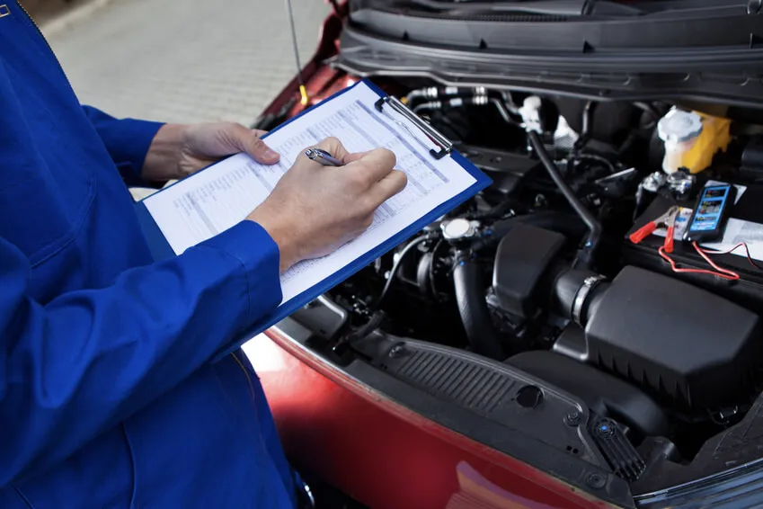

Uncompromising inspection and validation of automotive components — before they ever reach the line.
Request a Quote
We apply rigorous QA methods to every shipment, combining visual inspection, dimensional verification, and thorough documentation review to ensure full compliance and complete peace of mind for our clients.
Our QA team works directly with OEMs, Tier 1 and Tier 2 suppliers, ensuring that no non-conforming component reaches the production line — protecting your reputation and your bottom line.
All components are received, logged, and assigned a batch reference for full traceability from the moment they arrive.
Trained inspectors examine each part for surface defects, cosmetic issues, and any visible non-conformances against specification.
Components are measured and verified against OEM drawings and tolerances to ensure dimensional accuracy and fit.
A detailed inspection report is produced. Conforming parts are released; non-conforming parts are quarantined and documented.
Our QA processes are fully certified and regularly audited, ensuring consistent compliance with global automotive standards.
You receive clear, detailed reports on every batch — including defect rates, trends, and actionable recommendations.
We offer flexible deployment — our QA team can operate at your facility or at ours, depending on your production needs.
Over 21 years of automotive quality experience means our team understands exactly what OEMs demand — and delivers it every time.
We understand that production waits for no one. Our rapid inspection turnaround keeps your supply chain moving without interruption.
Our goal is simple: zero defective parts reaching your line. Every process we run is built around that commitment.